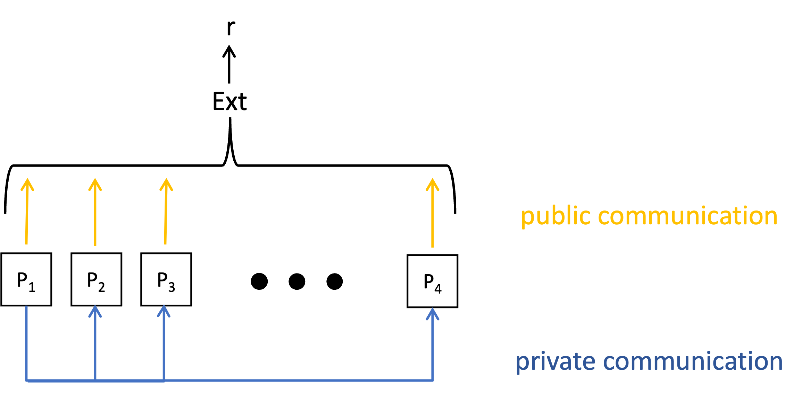
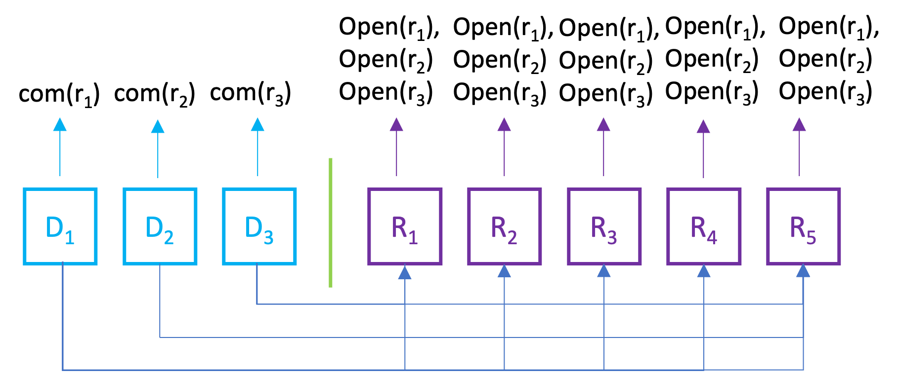

YOSO Randomness Generation with Worst-Case Corruptions
Randomness is a fundamental component of numerous real-world protocols. It is used everywhere, from ensuring fairness in the green card lottery to its application in clinical trials, financial audits, and various blockchain technologies.
For these protocols, randomness must satisfy several key properties. First, it should not be possible to predict the randomness before it was generated, i.e., the randomness ought to be unpredictable. Second, no one should be able to bias this randomness, i.e., the randomness should to be unbiasable. Finally, many applications profit from randomness which can be seen by everyone, i.e., the randomness should to be public.
Centralized randomness beacons, which emit unpredictable and unbiased random bits at regular intervals, have been thoroughly researched, from Rabin’s pioneering work in 1983 to the NIST beacon. However, centralized approaches can be undesirable due to their single points of failure. An alternative is to design a distributed algorithm where mutually distrusting parties collaborate to create a randomness beacon service.
Our work focuses precisely on this alternative. We design distributed randomness generation algorithms which produce public, unpredictable, and unbiased random bits.
Our Setting: YOSO with Worst-Case Corruptions
To obtain such a randomness generation algorithm, we are working in a model known as YOSO – You Only Speak Once, and specifically we consider \(\text{YOSO}^\mathsf{WCC}\) – a version of YOSO with worst case corruptions. This model is tailored to the randomness generation setting and has been proposed by Nielsen, Ribeiro and Obremski at CRYPTO 2022.
The motivation behind this model is the following. Say we wish to have a long-running service which generates random bits. As this process runs over a long period of time, parties can join and leave the system at any point in time, subject to the constraint that at any point in time one party is online.
In more detail, we consider \(n\) parties which are executed one after the other. We assume that each party has its own internal source of randomness. We consider a computationally bounded adversary which is allowed to corrupt any \(t\) out of \(n\) parties before the protocol starts. Upon its execution, \(P_i\) can publicly broadcast a value \(x_i\) and send private messages \(s_{i,j}\) to each “future” party \(P_j\), i.e., any \(P_j\) such that \(j > i\). Depending on when the adversary learns messages addressed to the corrupt parties, Nielsen, Ribeiro and Obremski distinguish between two different variations of \(\text{YOSO}^\mathsf{WCC}\). In the following, we will work in the so-called execution-leaks \(\text{YOSO}^\mathsf{WCC}\)model, where we assume that the adversary can see a value sent to a corrupt recipient upon the execution of this recipient.
The goal is to use the publicly broadcast values to extract a public, unpredictable, and unbiased random bit \(r\). See the picture below for a visual representation of this model.
Strawman Solution
How can we obtain an unpredictable and unbiased random bit in the setting above? The first naive idea is to use a well-known commit-and-reveal paradigm. Briefly, this notion utilizes a commitment scheme, which is a cryptographic building block that allows a party to commit to a value, and later provide an opening information which in particular reveals the committed value. Security properties of such schemes ensure that until the commitment is opened, the committed value is hidden. At the same time, it is hard to open the commitment to two different values, i.e., the commitment provides binding. Think of it as putting a message in a box, locking the box and handing it to the receiver, and later giving this receiver the box key.
In our strawman solution we use \(t+1\) parties (dealers in the following), each of which is contributing randomness in a way that the randomness is hidden from the others at first. Another \(2t+1\) parties (receivers) will be helping to reveal the contributions of the first parties at the right time. Specifically, we let each dealer commit to a random value \(r_i\) and send its opening to every receiver. After all dealers have finished the execution, each receiver simply reveals the opening information it got from each dealer. See the picture below for an example where \(t=2\). 
We call a dealer valid if the majority of the receivers, i.e., \(t+1\) of them, revealed a value that is consistent with a commitment. Let \(V\) denote the index set of valid dealers. We set the output randomness as the xor of all \(r_i\) that were submitted by valid dealers: \[ r = \bigoplus_{i \in V} r_i \]
In the example above, say that all parties are honest and \(r_1 = 1\), \(r_2 = 0\), and \(r_3 = 1\). As all dealers are honest, every dealer sends correct openings to each receiver, and as each receiver is honest too, every opening information is published and every dealer is deemed valid. Thus, after the receivers reveal the openings the output is set to be \(r=r_1 \oplus r_2 \oplus r_3 = 0\).
One could think that this is secure, as \(t+1\) honest receivers will always output the correct value for each receiver, hence honest dealers’ values are always counted in the outcome. Further, since there is at least one honest dealer among the \(t+1\), the resulting xor is computed using at least one unbiased random value. This value was further hidden before we started with the reconstruction. Surely, this is enough to achieve security?
Unfortunately, this intuition is not entirely correct. For simplicity, say we focus on generating a single random bit, i.e, every dealer will commit to either a zero or one. While it is true that all honest dealers’ values are taken into account, a coalition of a dealer and a receiver, say \(D_1\) and \(R_5\), can conduct the following attack: A malicious dealer \(D_1\) commits to bit one, just as in the honest example above, but sends the correct opening only to exactly \(t\) receivers (not including the colluding receiver), for example \(R_1\) and \(R_2\). Thus, \(t\) honest receivers (\(R_1\) and \(R_2\) in our example) will open the correct value, while another \(t\) honest receivers (\(R_3\) and \(R_4\)) won’t open anything for this dealer. Thus, the contribution of only honest receivers is just not enough to deem the malicious dealer valid (recall that \(t+1\) valid opening are required). Further, note that every receiver knows the contribution of all honest parties. This means that the colluding receiver knows the outcome of the coin and can decide whether to open the correct value for the colluding dealer or not, thus flipping the xor outcome if needed! In our example, \(R_5\) knows \(r_1, r_2,\) and \(r_3\). Upon its execution, it could chose to reveal the correct opening for \(D_1\), thus making the outcome to be \(r=r_1 \oplus r_2 \oplus r_3 = 0\), just as in the honest example. However, if \(D_1\) and \(R_5\) prefer the outcome to be \(1\), \(R_5\) simply withholds the opening for \(D_1\). Now, \(D_1\) is not considered valid anymore and the outcome becomes \(r=r_2 \oplus r_3 = 1\).
The attack described above is known as a conditional abort attack. Note that simply changing the threshold in the valid dealer definition does not help: A malicious dealer can always send private values to the honest parties in a way that the values revealed by these parties are just not enough to include the value in the final result. This way, the colluding receiver always has the option to decide whether the contribution of the malicious dealer should be accounted for.
Our Solution
To address the issue above, in our solution we ensure that the generated random bit is fixed prior to the reveal phase. To achieve this, we rely on a well-known cryptographic primitive, a \((t, n)\)-verifiable secret sharing (VSS) protocol. Using such a protocol, a dealer can share its secret among \(n\) parties in a way that any \(t + 1\) parties can reconstruct the secret, but any \(t\) (potentially corrupted) parties possess no information about the secret. VSS further provides the so-called strong commitment property, which states that the shares of the honest parties define a secret (which could be \(\bot\)).
Now, similar to the strawman solution above, we can let \(t + 1\) dealers each contribute their secret randomness. However, instead of simply committing to the randomness and sending the opening information to every recipient, we use VSS to share each secret. By the strong commitment property we know that the secret of each dealer is defined by the shares of the honest share receivers.
Designing a YOSO-friendly VSS
As a first step towards the solution outlined above, we design a \(\text{YOSO}^\mathsf{WCC}\)-friendly VSS scheme. We build our protocol around the well-known Pedersen VSS. The standard non-YOSO version of this VSS requires four rounds, described below. Here, \(s\) is the secret that is being shared, and \(g\) and \(h\) are generators of a group where computing discrete logarithms is hard (in particular, we assume that \(\log_gh\) is not known to any party). Assuming that \(t\) parties can be corrupt, the number of receivers \(R_i\) needs to be at least \(2t+1\).
- The dealer \(D\) chooses two degree-\(t\) polynomials $$f_1(x)=a_0 + a_1x + \cdots + a_tx^t,$$ $$f_2(x)=b_0 + b_1x + \cdots + b_tx^t$$ such that \(b_0=s\). Then, \(D\) broadcasts commitments $$(c_0, c_1, \cdots, c_t) = (g^{a_0}h^{b_0}, g^{a_1}h^{b_1} \cdots , g^{a_t}h^{b_t}),$$ and sends \(r_i=f_1(i)\) and \(s_i=f_2(i)\) to each \(P_i\), \(i \in [n]\).
- Each party \(R_i\) checks whether \(g^{r_i}h^{s_i} = \prod_{k = 0}^{t} c_k^{i^k}\). If not, \(R_i\) broadcasts \(\textsf{Complain}\).
- \(D\) broadcasts all shares from parties who complained. If any share that \(D\) broadcasts does not satisfy the above relation, \(D\) is deemed corrupt and the execution halts. Otherwise, each \(P_i\) who complained replaces its old share with the new \((r_i,s_i)\).
- Each \(R_i\) outputs \(r_i, s_i\). The value \(s=f_2(0)\) is the reconstructed secret.
In the construction above, the dealer and each share recipient \(R_i\) speak twice – the dealer is required to come back in the third round to resolve the complaints, and each \(R_i\) might complain in the second round, and is then required to output its share in the fourth round. This violates the YOSO setting, where each party participates only once. We adapt this scheme to \(\text{YOSO}^\mathsf{WCC}\) in two steps: First, we split the dealer execution into two steps, i.e., we use two different parties \(D^1\) and \(D^2\) for the dealer. We let \(D^1\) execute the first round of the protocol above and send its state privately to \(D^2\). \(D^2\) can then execute the third round of the protocol. Similarly, we split the execution for each share recipient \(R_i\) into two steps, one of which is executed by party \(R^1_i\), and another by party \(R^2_i\). We let \(R^1_i\) execute the second round of the protocol above and send its state to its counterpart \(R^2_i\). Then, \(R^2_i\) can execute the fourth round of the protocol above as the original party \(R_i\).
Note that this construction does not entirely correspond to the traditional definition of VSS, as we now need both \(D^1\) and \(D^2\) to behave honestly in order to guarantee security of the value shared by \(D^1\). However, this version of VSS is nevertheless sufficient for our purposes, because we are interested only in preserving the secrecy of one out of \(t+1\) VSS executions.
A final issue remains: Currently, we assume that \(g,h\) are publicly known values, and the construction above is secure assuming that \(\log_gh\) is not known to any party. How can we remove this assumption? Is it possible to let each dealer simply supply its own pair of \(g\) and \(h\)? Unfortunately not: If a malicious dealer knows \(\log_gh\) and colludes with a party \(R_i\), then \(R_i\) could cheat by choosing one out of many valid openings, thus changing the reconstructed secret value. To fix this, we substitute computationally Pedersen commitments by unconditionally binding ElGamal commitments. In more detail, we now compute the commitment \((c_0, c_1, \cdots, c_t)\) as follows: $$ (c_0, c_1, \cdots, c_t)=\left((g^{a_0}, h^{a_0}\cdot g^{b_0}), (g^{a_1}, h^{a_1}\cdot g^{b_1}), \cdots , (g^{a_t}, h^{a_t}\cdot g^{b_t})\right).$$
This way, even though a dealer knows \(\log_gh\), the prior attack is impossible, as there simply do not exits two different openings that correspond to the same commitment.
Optimizing the Number of Receivers
When implemented naively, the construction outlined above requires \(6t+4\) parties: \(t+1\) dealers of type \(D^1\), each of which uses the same set of \(2t+1\) receivers of type \(R^1_i\), then \(t+1\) dealers of type \(D^2\), and finally \(2t+1\) receivers of type \(R^2_i\). As an optimization, we observe that in our execution-leaks model \(t+1\) receivers of type \(R^2_i\) are sufficient. Consider the following change to our VSS construction above. Let each receiver \(R^1_i\) send its shares to all parties \(R^2_j\), instead of only sending it to its counterpart \(R^2_i\) as before. During the reconstruction, we then let each \(R^2_j\) publish all received shares. As in the execution-leaks scenario we assume that the channels to the future parties do not reveal any information until the corresponding recipient is executed (which in our case is after all dealers’ contributions are fixed), sending information to all parties \(R^2_j\) does not impact security.
Together with a few additional optimizations such as pipelining (see our paper for details), our protocol allows to achieve the following result:
Assuming ElGamal commitments, there exists a computationally secure randomness generation protocol with \(4t+4\) parties in the execution-leaks model, where \(t\) is the number of corruptions.
Conclusions and Future Directions
Our work achieves efficient distributed randomness generation in the worst-case YOSO model without any setup or heuristic assumptions.There are several exciting avenues for future research. First, there is still room to improve the role-complexity of our \(\text{YOSO}^\mathsf{WCC}\) randomness generation protocols in the standard model (the same is true for the known information-theoretic protocols from the work by Nielsen, Ribeiro and Obremski). Next, it would be interesting to improve the communication complexity of our protocols. Finally, proving the lower bound for the communication complexity is another exciting problem.